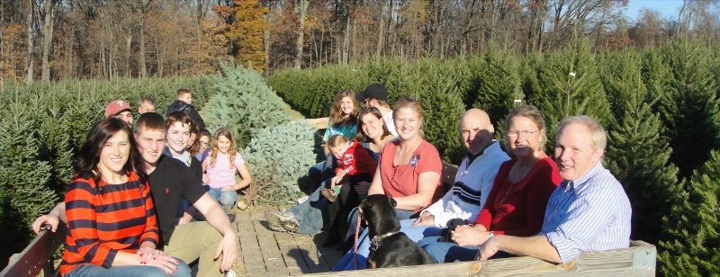
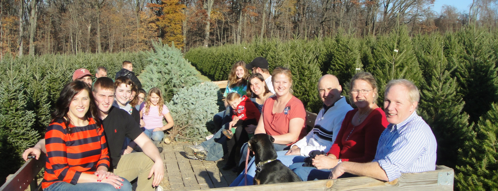
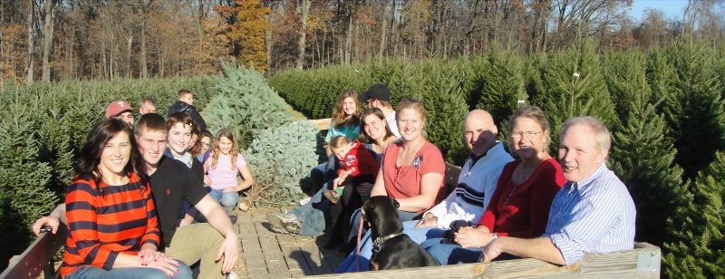
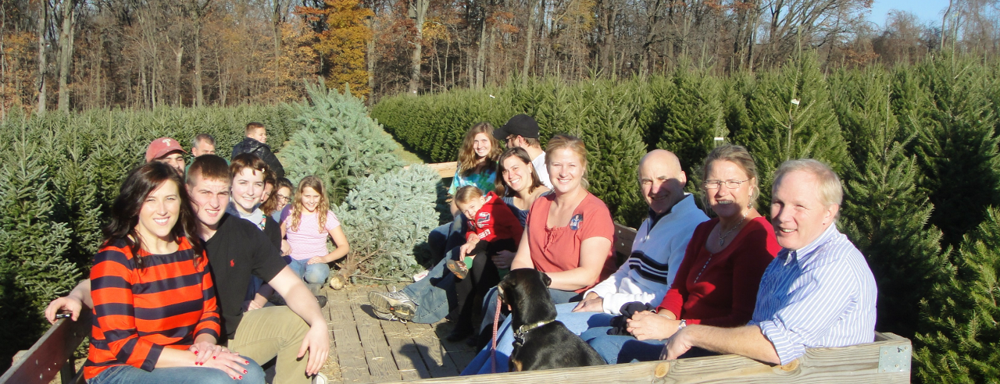

Our farm on Western Road is open for choosing and cutting your Christmas tree every day after Thanksgiving from 9:OO A.M. to dusk. When you arrive at the farm we provide a saw to take with you to cut your tree. On weekends you may ride on the tractor-pulled wagons to various tree areas or, if you prefer, there are paths for walking. Dogs are allowed, but only on a leash for safety. Many people find their tree quickly and some like to wander through the tree fields. Our fields are mowed and free of weeds and briers. Be sure to bring your camera as taking pictures of your Christmas tree adventures is always a good idea.
When you are ready to return from the field with your perfect tree, the wagons will be passing by to pick up you and your tree and bring you back to the barn. The tree then gets put on a shaker to remove old needles and debris. This is a fascinating sight, watching your tree dance on the shaker. Next, if your tree stand has a pin your tree will be drilled for easy set-up. Then we bale your tree to make it easy to handle and transport. These services are all free and so is the hot chocolate for your family.
We also have a selection of fresh cut trees for those who do not wish to go to the field and cut. We have our own hand made wreaths and other decorations and greens for sale as well as roping and the popular tree stands. We think you and your family will enjoy a visit to Yeager’s Tree Farm.
Everyday after Thanksgiving, we are open:
From 9:00am to Dusk
1109 Western Road
Phoenixville, PA 19460
Our farm is located on Western Road 1/4 mile off Route 113
3 miles South of Phoenixville &
3 miles North of Chester Springs
Follow sign off Route 113
Explore MapFrom our 10,000 trees you can choose from:
∴ Douglas Fir
∴ Fraser Fir
∴ Blue Spruce
∴ Norway Spruce
∴ White Pine
to perfectly meet your holiday traditions!
Learn MoreEverything we have, ready and waiting, to create a family Cut Your Own Christmas Tree experience!
Learn MoreWe have a great time celebrating family traditions along with you!
Learn MoreWe love talking up a storm! Visit our Facebook page.
Visit